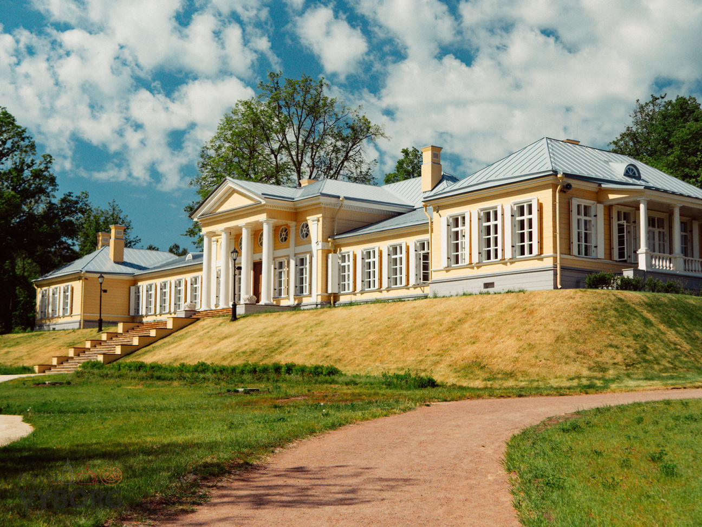

О парке
Монрепо — один из немногих сохранившихся в России пейзажных парков, в котором природа Карельского перешейка и рука человека соединились почти незаметно.

Парк расположен на северной окраине Выборга, на острове Твердыш, и выходит к Защитной бухте Выборгского залива. Его площадь — около 180 гектаров. Сегодня это историко-архитектурный и природный музей-заповедник, куда приезжают и жители Ленинградской области, и туристы со всей страны.
Название усадьбы пришло из французского языка: «Mon Repos» означает «мой отдых», «моё отдохновение». Так назвал её в XVIII веке один из первых владельцев, а в 1788 году имение приобрёл барон Людвиг Генрих фон Николаи — поэт, педагог и государственный деятель. Его семья владела Монрепо более полутора веков и превратила скалистый участок в настоящий романтический парк.

Главная особенность Монрепо — сам рельеф. Огромные гранитные скалы и валуны, оставленные ледником, создатели парка не стали убирать, а сделали частью композиции. Дорожки огибают камни, поднимаются на смотровые площадки и снова спускаются к воде. Над заливом на высоком утёсе стоит Храм Нептуна — лёгкая ротонда с колоннами, которую видно издалека.

Парк устроен по законам английского пейзажного стиля: здесь нет прямых аллей и стриженых газонов, как в регулярных садах. Каждый поворот тропы открывает новую «картину» — поляну, ручей, мостик или вид на острова. Прогулка превращается в маленькое путешествие, где пейзажи сменяют друг друга, словно страницы книги.
Неспешная прогулка по основному маршруту занимает около двух часов. Удобнее всего начать её от главного усадебного дома, затем подняться к Храму Нептуна, пройти вдоль берега залива и вернуться к выходу лесными тропами мимо скал. Лучше взять с собой удобную обувь: дорожки местами каменистые, а подъёмы довольно крутые.

Особое место занимает остров Людвигштайн, где находится фамильный некрополь семьи Николаи. Его называют «островом мёртвых»: это тихий уголок, отделённый от остального парка узкой протокой. Рядом с усадебным домом сохранился флигель-библиотека, а в глубине парка встречаются следы старых павильонов, гротов и источников.

Монрепо красив в любое время года. Весной здесь цветут ветреницы, летом в тени деревьев прохладно даже в жару, осенью клёны и липы окрашивают склоны в золото, а зимой заснеженные скалы выглядят особенно сурово. Поэтому в парк хочется возвращаться снова и снова — и каждый раз находить в нём что-то новое.